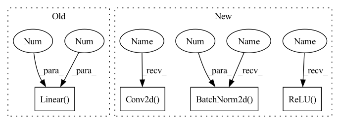

Pattern ID :472

Before Change
self.fc21 = nn.Linear(400, 20)
self.fc22 = nn.Linear(400, 20)
self.fc3 = nn.Linear(20, 400)
self.fc4 = nn.Linear(400, 784)
def encode(self, x):
h1 = F.relu(self.fc1(x))
return self.fc21(h1), self.fc22(h1)
After Change
super(VAE, self).__init__()
self.mode = mode
self.encoder = nn.Sequential(
nn.Conv2d(3, 32, kernel_size=4, stride=2, padding=1, bias=False),
nn.BatchNorm2d(32),
nn.ReLU(inplace=True),
nn.Conv2d(32, 64, kernel_size=4, stride=2, padding=1, bias=False),
nn.BatchNorm2d(64),
nn.ReLU(inplace=True),
nn.Conv2d(64, 128, kernel_size=4, stride=2, padding=1, bias=False),
nn.BatchNorm2d(128),
nn.ReLU(inplace=True),
nn.Conv2d(128, 256, kernel_size=4, stride=2, padding=1, bias=False),
nn.BatchNorm2d(256),
nn.ReLU(inplace=True)
)
self.sigma = nn.Conv2d(256, 1024, kernel_size=4, bias=False)
self.mu = nn.Conv2d(256, 1024, kernel_size=4, bias=False)
self.decoder = nn.Sequential(
nn.ConvTranspose2d(1024, 256, kernel_size=4, bias=False),
nn.BatchNorm2d(256),
nn.ReLU(inplace=True),
nn.ConvTranspose2d(256, 128, kernel_size=4, stride=2, padding=1, bias=False),
nn.BatchNorm2d(128),
In pattern: SUPERPATTERN
Frequency: 3
Non-data size: 4
Instances
Fragment ID: 1360180
Project Name: deeperlearner/pytorch-template
Commit Name: 576d9f329d45ddf4af2b320655eb909c48d5cb34
Time: 2020-11-24
Author: b04202035@g.ntu.edu.tw
File Name: model/VAE.py
M Class Name: VAE
N Class Name: VAE
M Method Name: __init__(2)
N Method Name: __init__(1)
M Parent Class: nn.Module
N Parent Class: nn.Module
M File Name: model/VAE.py
N File Name: model/VAE.py
M Start Line: 7
M End Line: 14
N Start Line: 7
N End Line: 44
Fragment ID: 1360500
Project Name: caipeide/autorace
Commit Name: 06e4c00bb704ca792481a7c06c052bfe2898aab6
Time: 2020-12-01
Author: pcaiaa@connect.ust.hk
File Name: ai_drive_models.py
M Class Name: LinearModel
N Class Name: LinearModel
M Method Name: __init__(1)
N Method Name: __init__(1)
M Parent Class: nn.Module
N Parent Class: nn.Module
M File Name: ai_drive_models.py
N File Name: ai_drive_models.py
M Start Line: 108
M End Line: 110
N Start Line: 110
N End Line: 127
Fragment ID: 1360209
Project Name: deeperlearner/pytorch-template
Commit Name: 576d9f329d45ddf4af2b320655eb909c48d5cb34
Time: 2020-11-24
Author: b04202035@g.ntu.edu.tw
File Name: model/VAE.py
M Class Name: VAE
N Class Name: VAE
M Method Name: __init__(2)
N Method Name: __init__(1)
M Parent Class: nn.Module
N Parent Class: nn.Module
M File Name: model/VAE.py
N File Name: model/VAE.py
M Start Line: 7
M End Line: 14
N Start Line: 7
N End Line: 44
Fragment ID: 1360895
Project Name: vlsomers/bpbreid
Commit Name: 710b9ac1a28d418bddc41aeeda320ab4de4d17fe
Time: 2018-10-26
Author: k.zhou@qmul.ac.uk
File Name: torchreid/models/resnet.py
M Class Name: ResNet
N Class Name: ResNet50M
M Method Name: __init__(7)
N Method Name: __init__(3)
M Parent Class: nn.Module
N Parent Class: nn.Module
M File Name: torchreid/models/resnet.py
N File Name: torchreid/models/resnet.py
M Start Line: 71
M End Line: 84
N Start Line: 107
N End Line: 130